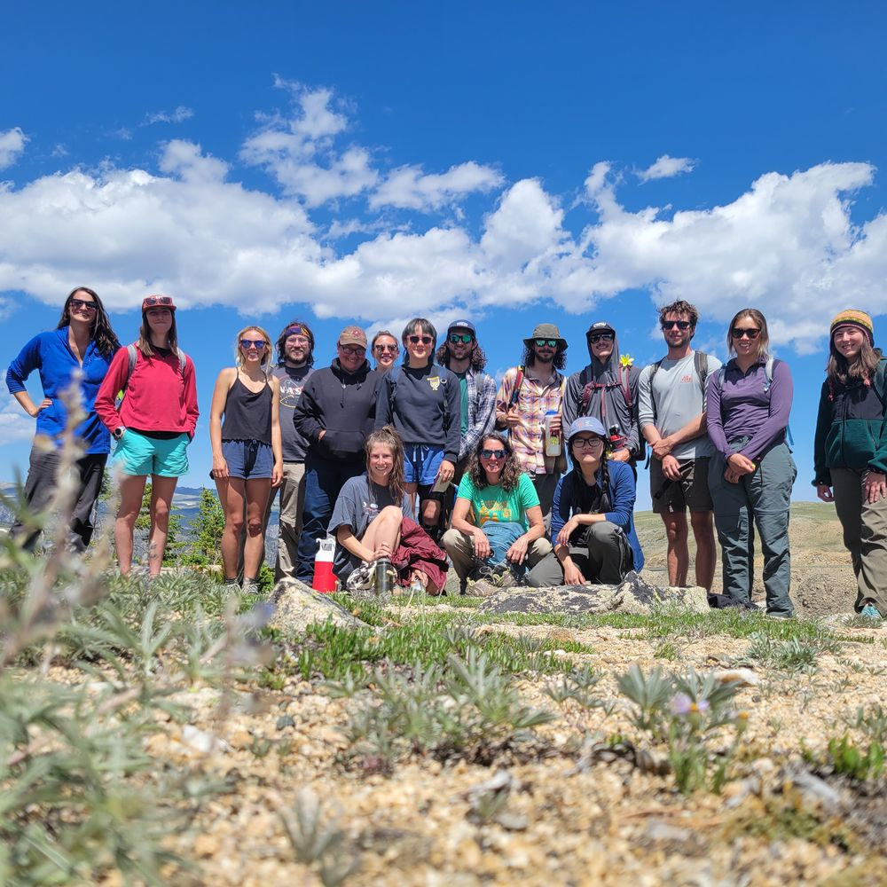
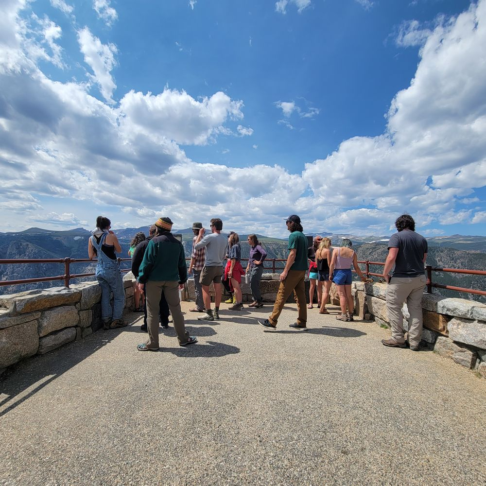
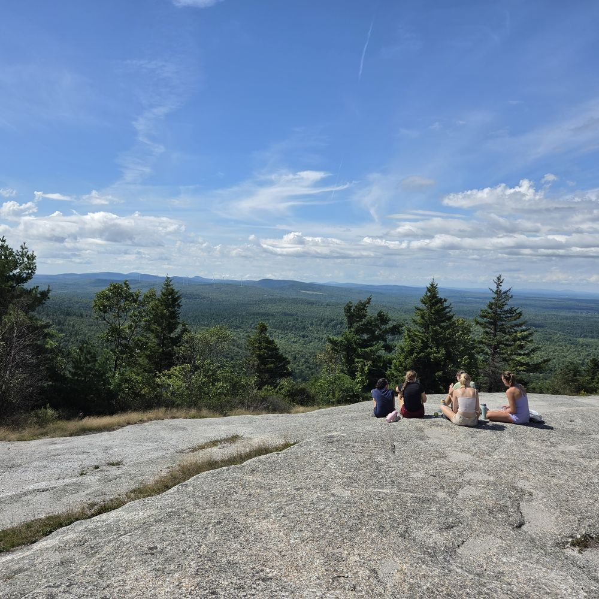
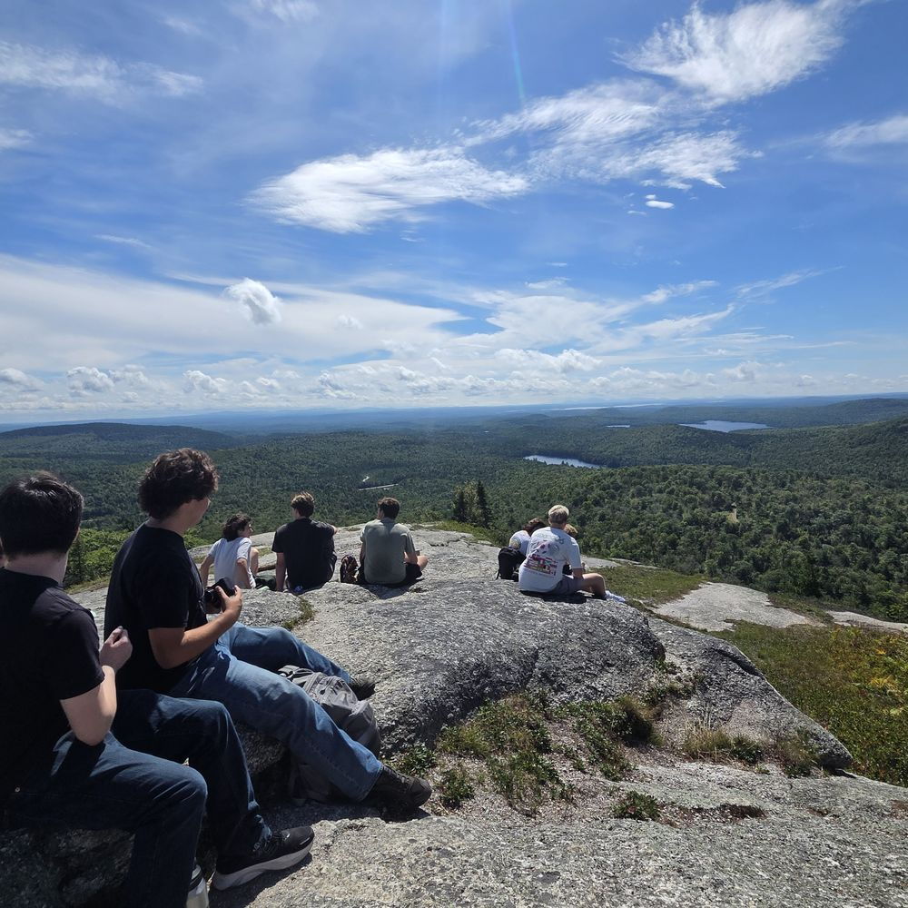

Teaching & mentorship
In my teaching of ecology, I strive to prepare a new generation of land managers, scientists, conservationists, public policymakers, and stewards. I believe in creating a dynamic learning environment that responds to student needs and interests while providing them with strong foundations for their studies. A data-driven approach is central to my teaching philosophy, where courses evolve based on student feedback, evaluations, and evidence-based pedagogy. I emphasize hands-on experiences, whether in the field, lab, or through computer-based exercises, to engage students and develop their analytical skills.
Throughout my teaching career I have mentored undergraduate students in career guidance, coding, statistics, and ecological theory. By incorporating these experiences into my approach, I aim to build an inclusive and interactive environment that fosters critical thinking, problem-solving, and a deeper understanding of ecology, equipping students to excel not only as ecologists but in hard skills like coding and GIS.
Research Learning Experience
Organized and facilitated hands-on field and lab material for an introductory course welcoming incoming students to the Ecology and Environmental Science program.
Field Problems in Environmental Science
A weekend fieldwork intensive in which students collect, analyze, and publicly present data. The course explores how development in Acadia National Park interacts with biodiversity, carbon storage, and the socio-economic impacts of tourism.
Rocky Mountain Vegetation
Contributed to iterative curriculum design and student engagement across three years in a lab and field setting. Topics ranged from lab-based vegetation identification to USFS habitat typing across multiple field trips and regional vegetation analysis.
LiDAR Remote Sensing
A lecture and companion lab introducing the fundamentals of LiDAR, with in-depth discussion of data sources and spatial-temporal scale mismatch. The lab used Anaconda and Python batch scripts to download and process GEDI data, then brought it into R for visualization and comparison to fine-scale ALS data.
Alpine Ecology
Helped lead a weekend field course into the Beartooth Wilderness alpine zone, facilitating individual student-run research projects and contributing to a longitudinal plant-height dataset. Explored alpine geology, plant phenology, wildlife, and pollinators with a group of motivated undergraduates.
Landscape Ecology
Graduate-level technical instruction in applications of landscape ecology using GIS, including independently revamping lab material to transition the course from ArcMap to ArcGIS Pro.
Biological Diversity of Life
Designed lectures for a hybrid-format class along with grading rubrics and assignments. Independently taught six lab sections (about 70 students), introducing non-majors to the scientific method from research proposal through final presentation of findings.
Mentorship
Undergraduate Research Mentor, Forest Remote Sensing
Mentoring an undergraduate researcher on a dissertation-related project, with training in data analysis, scientific writing, and publication development.
Cross-Institutional Research Mentor, NEON Beetle Imaging Project
Mentoring two ASU biology master's students and one OSU computer science undergraduate in biodiversity imaging, AI workflow development, and ecological data integration, supporting interdisciplinary skill-building at the interface of ecology and computer vision.
SEEDS Mentor, Ecological Society of America
Mentored students through ESA's SEEDS program at three annual meetings, supporting early-career ecologists from a range of backgrounds.
Gallery



